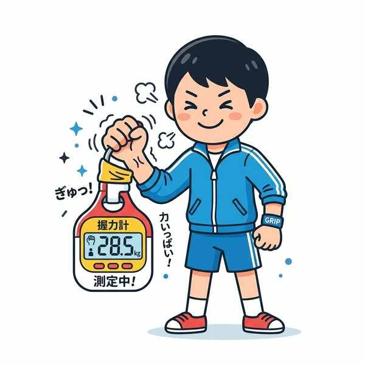
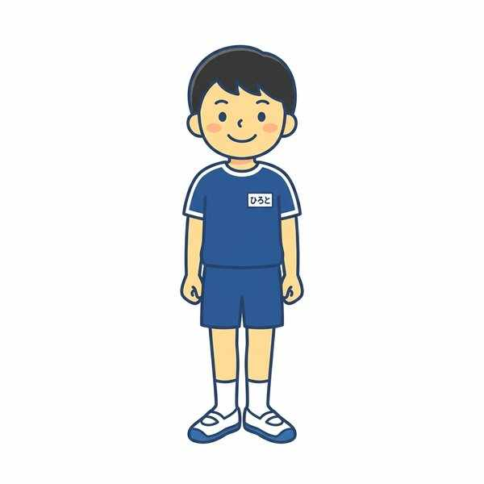
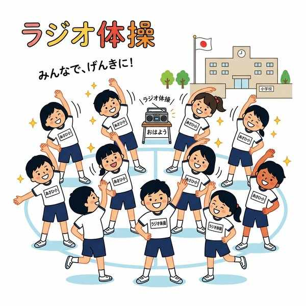

単元10: 体つくり運動と新体力テスト
体つくり運動は、自分の体の状態に気づき、体の調子を整えたり、仲間と協力して楽しく運動を行ったりすることを目的としています。この単元では、学校で毎年実施される「新体力テスト」の測定ルールとコツ、集団行動の基本姿勢、およびラジオ体操のポイントを解説します。
1. 新体力テスト（全8種目）の測定方法

筋力を測定する握力テストなど全8種目のコツ
新体力テストは、健康やスポーツに必要な体力を科学的に測定するテストです。各種目の測定時間、単位、判定する体力の要素はペーパーテストでも頻繁に問われます。
| テスト種目 | 測定単位 | 測定時間やルール | 測定する主な体力 |
|---|---|---|---|
| 握力 | kg（キログラム） | 左右交互にそれぞれ2回ずつ測定。 | 筋力 |
| 上体起こし | 回（回数） | あお向けで膝を曲げ、両腕を胸の前で組んだ状態から、背中がマットにつくまで上体を起こした回数を30秒間測定。 | 筋力・筋持久力 |
| 長座体前屈 | cm（センチ） | 壁に背をつけ、長座の姿勢から箱を手で前に押し出した距離を測定。 | 柔軟性 |
| 反復横とび | 点（回数） | 100cm間隔の3本のラインを左右にまたぐ・踏み越える回数を20秒間測定。 | 敏しょう性 |
| 20mシャトルラン または持久走 |
回（シャトルラン） 分・秒（持久走） |
・シャトルラン：音楽の電子音に合わせて20mを往復。 ・持久走：男子1500m、女子1000mのタイムを計測。 |
全身持久力 |
| 50m走 | 秒 | しゃがんだ状態からスタートするクラウチングスタートで行う。 | 走力（スピード） |
| 立ち幅とび | cm（センチ） | 両足を揃えて踏み切り、前方に跳んだ距離を測定。 | 瞬発力 |
| ハンドボール投げ | m（メートル） | 直径2mの円の中から、ボールを前方に投げる。 | 瞬発力・巧緻性 |
※テスト対策：「測定単位がcmである種目」は、「長座体前屈」と「立ち幅とび」の組み合わせです。
2. 集団行動の基本と姿勢

集団行動の基本姿勢（気をつけ）と方向転換
集団全体が安全かつ効率よく行動するために、決められた姿勢や号令（コマンド）に正しく従います。
- 「気をつけ」の姿勢：両足のかかとを揃え、つま先はおよそ45度〜60度に開いて立ちます。手は太ももの外側に軽く沿わせます。
- 「右向けー右」：気をつけの姿勢から、右に90度体の方向を変えます。
- 「回れー右」：気をつけの姿勢から、右回りで後方（180度）を向きます。
- 踏み出す足の基本：行進（歩行）や駆け足を始める際は、必ず左足から踏み出します。
3. 体つくり運動とラジオ体操

体をほぐし体力を高めるラジオ体操の動き
① ストレッチングの効果
ストレッチングは、筋肉を伸ばして関節の可動域を広げ、体の柔軟性を高める運動です。
- うつ伏せで上体を反らせるストレッチ：主に胸（からお腹）の筋肉を伸ばします。
- 床に座り片膝を立てて体をひねるストレッチ：主に腰周りの筋肉を伸ばします。
- 手押し車などの運動：自重やパートナーの負荷を利用する「手押し車」などは、体の力強い動きを高める（筋力を高める）運動に分類されます。
② ラジオ体操の運動順序
- ラジオ体操第一の最初の運動：伸びの運動（全身をゆする運動ではなく、大きく背伸びをする運動から始まります）。
- ラジオ体操第一・第二の最後の運動：どちらも必ず深呼吸で終わります。
🔥 定期テスト対策・暗記のコツ
① テストの測定数値（秒数・距離）
「上体起こしは 30秒間」、「反復横とびは 20秒間」、「ハンドボール投げの円は 直径2m」、「持久走は 男子1500m・女子1000m」。この数字は数値選択問題として頻出です。
② 集団行動の「左足」と「45〜60度」
行進開始は必ず「左足」から。気をつけのつま先の角度は「45度〜60度」。この2点は集団行動の実技試験やペーパーテストの穴埋めで必ず狙われます。
③ ラジオ体操の最初と最後
ラジオ体操第一の始まりは「伸びの運動」、第一・第二の締めくくりは「深呼吸」です。曲の順序や動きの名称を一致させておきましょう。